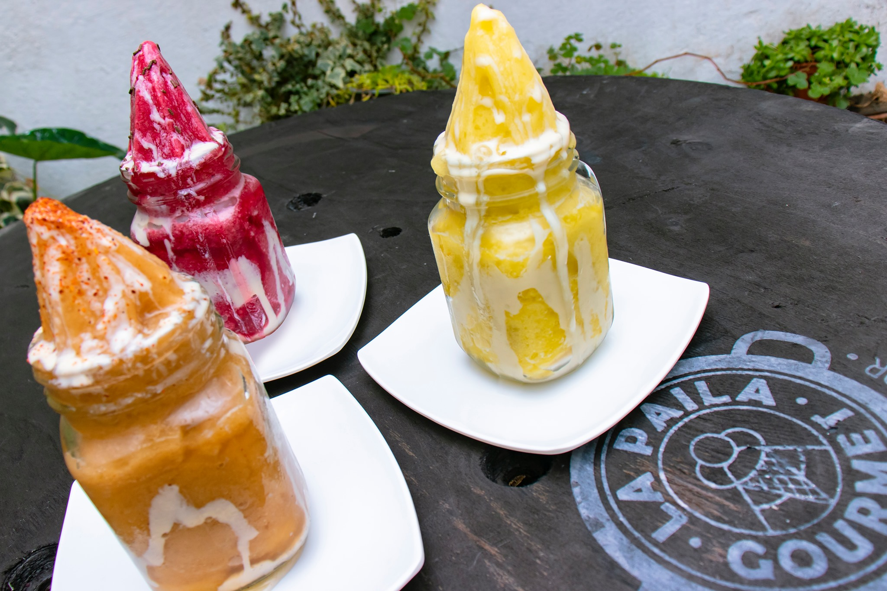

Nuestros Productos
A continuación podrás observar los productos que ofrecemos
-

-

- 
-

-

Noticias
En el 'top' 5
Hay recetas que van echando raíces en un lugar. Quienes visitan Pasto, por ejemplo, encontrarán allí los helados de paila que poco a poco han ido generando identificación a lo largo de las décadas. Otros, han creado recetas exitosas que han perdurado y se han vuelto insignias de una ciudad, como el frozomalt de la Heladería Americana en Barranquilla.
Pasto: ecos de tradición
Con una sonrisa y su particular y cantado acento, ellos invitan a disfrutar del famoso hervido para soportar las bajas temperaturas que caracterizan a la Ciudad sorpresa de Colombia. El hervido es una bebida para entrar en calor, que se prepara de manera tradicional con chapil (un licor que se produce en Ricaurte, Nariño), se le agrega pulpa de frutas y se sirve caliente.
Recetas
Rico helado de mora
Ingredientes
- 1 litro de leche
- 1 kilo de mora
- Canela
- 70 gramos de azúcar
¿Quieres saber como se prepara?
Una refrescante preparación
Ingredientes
- 250 mililitros de agua
- 6 Maracuyá
- Hielo
- 40 gramos de azúcar
¿Quieres aprender a hacerlo en casa?